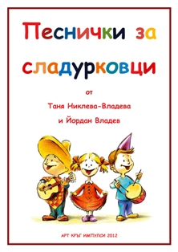
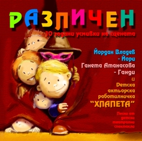
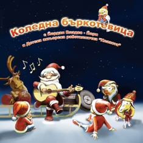
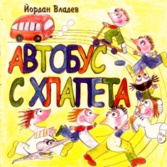

Песнички за сладурковци
- Дъждовно огледало
- Как така
- Куче
- Кенгурче
- Коте
- Мойто плюшено мече
- Великан
- Камилска история
- Вари бабо, боб
- Коза
Музика: Таня Никлева-Владева (1-3), Йордан Владев (4-10) Текстове: Красимира Стаменова (1 - 3), Йордан Владев (4-10), Виктор Владев (8), Виктор Андонов (10)
*Книжката съдържа ноти с текстове. Можете да изтеглите клавири на същите песни от тук и тук
Усмивки на сцената
- Интродукция (Сцена "Хлапета")
- Песен на Кралицата (Мъглява приказка)
- Песен на котарака Смоки (Мъглява приказка)
- Различен (Мъглява приказка)
- Мечтата (Мъглява приказка)
- Моторист (Вълкът и зедемте козлета)
- Най-красивата коза (Вълкът и седемте козлета)
- Песен на Мащехата (Пепеляшка)
- Великан (Котаракът в чизми)
- Песен на Добрия магьосник (Спящият красавец)
- Приказка (Сцена "Хлапета")
- Песен на Инспектор Кучей (Косе Босе)
- Песен на Пепеляшка (Пепеляшка)
- Трагична песен на мързеливата сестра на Магьосника (Спящият красавец)
- Рецепта за приятелство (Готвачът)
- Песен на Трите феи (Спящият красавец)
- Песен на бухала Джо (Приказка за Носорога)
- Песен на Добрата фея (Приказка за Носорога)
Йордан Владев - Йори Ганета Атанасова - Ганди Детска актьорска работилничка "Хлапета"
Коледна бъркотевица с Йори
- Tho rose of love
- Сняг вали
- Коледна бъркотевица
- Звездна мечта
- Коза
- The past is gone
- Beautiful love
- Loud
- Когато си отиде
- -18 Плейбеците на песните
2008г.
Усмивки на сцената
- Здрасти
- Автобус
- Мечка
- Гума
- Коте
- Девет баби
- Наш лисан
- Моето плюшено мече
- Вари бабо, боб
- Великан
- Камилска история
- Трима раци
- Пръв юнак
- Тръгнал Зайо
- Кенгурче
- На моста
- Хайде пак
- Приспивна
- -34 Плейбеците на песните
Дебютен авторски албум с песни за деца, 2003